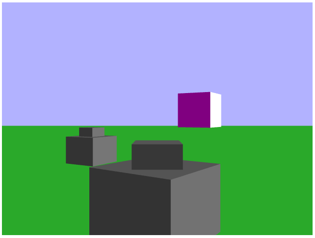
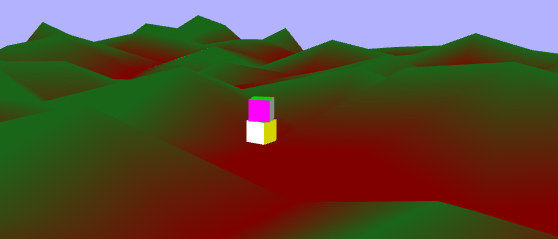
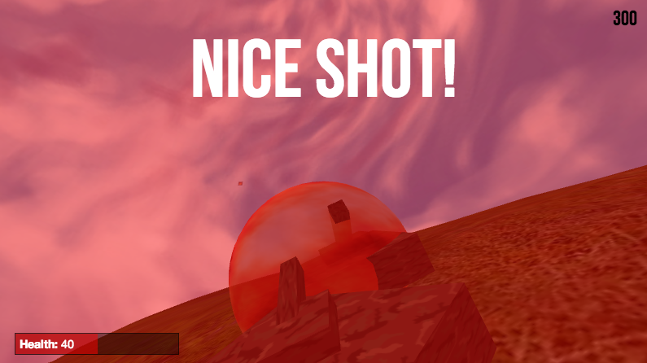

<?php

include '../template.php';

$additional_css = '
    <link rel="stylesheet" href="/blog/tanks.css">
';

print_header('blog', 'WebGL Tanks', $additional_css);

?>

<div id="main">
    <h4>June 22, 2013</h4>
    <h3>Creating a 3D Multiplayer Game in WebGL</h3>
    <hr>

    <div class="article-pic" id="tank">
    </div>

    <p>
        Over the past three weeks, a few classmates and I have worked on our final project for our upper division
        3D graphics course at UCLA. We chose to make a multiplayer game in WebGL, where players can compete
        against each other as tanks.
    </p>

    <p>
        You (and friends) can play this game <a href="http://tanks.purpleoctopus.net">here</a>,
        or check out the <a href="https://github.com/pcrumm/tank-project">github page</a>.
    </p>

    <p>
        My classmates and I were all quite proud of getting a relatively feature-complete project like this
        done in just over three weeks, so I wanted to write a bit about the game's features and what I myself worked on.
    </p>

    <hr>

    <h4 class="section-header">The Game Engine</h4>

    <p>
        While there are a few excellent WebGL libraries out there, such as <a href="http://threejs.org/">Three.js</a>, we were not
        permitted to use any graphical frameworks for this project. We therefore had to directly interact with and program the GPU.
        I decided to take on the task of creating a game engine that would take care of, and abstract away, ugly graphics implementations.
    </p>

    <p>
        Programming the GPU (with programs known as shaders) is fairly difficult, especially considering how experimental WebGL still is.
        In the modern "graphics pipeline", a programmer must initialize data structures on the CPU (in Javascript, in this case), then directly
        write to the GPU's memory, and finally interpret on a per-point and per-pixel basis in the GPU (in a language called GLSL,
        essentially a limited C). Often the most painful moments of developing this game were manually coordinating memory between the CPU and GPU.
    </p>

    <a href="/blog/tanks/early-game.png">
        <div class="pic-wrapper">
            
            <p>An early version of the game, when I was trying to implement movement and rotation</p>
        </div>
    </a>

    <p>
        The most technically difficult part of this project was understanding, creating, and implementing the linear algebra and trigonometry
        operations required to accomplish certain tasks. An early roadblock in the project was making sure that "light" behaved the way I wanted it to:
        implementing the visually superior <a href="http://en.wikipedia.org/wiki/Phong_shading">Phong shading model</a> would somehow cause
        the source of light to change direction upon rotating the camera. It took me five solid days to create the correct matrices and
        operation order to allow for a third-person camera that could also rotate simultaneously around the x- and y-axis.
    </p>

    <p>
        It often took incantations of arcane black magic in the dead of the night to fix awful issues like these (I'm only half joking).
        In any case, I was extremely proud to have created a solid engine that my partners could easily use without needing to know
        the underlying ugliness.
    </p>

    <p>
        The game engine was my large task in this project, but I'd like to also quickly go over other significant parts of the
        project.
    </p>

    <hr>

    <h4 class="section-header">Random Terrain Generation and Multi-texturing</h4>

    <p>
        The game looks surprisingly decent thanks in very large part to a smooth landscape, and blending of various textures.
        The landscape has been generated by interpreting pseudo-random noise into various y-coordinates that are mapped to a grid
        of x and z points. Additional work had to be done to eventually force all y-values below the water line, in order to create an island.
    </p>

    <a href="/blog/tanks/early-terrain.png">
        <div class="pic-wrapper">
            
            <p>Early stages of implementing terrain geometry and lighting</p>
        </div>
    </a>

    <p>
        In order to make the landscape more visually interesting, 5 textures were mapped onto it, based on height. For instance, the lowest altitude
        regions have a sand texture, while the highest have snow. A quite involved blending process is also performed on the areas where regions
        overlap (like, say, when dirt meets grass) on a per-pixel basis.
    </p>

    <hr>

    <h4 class="section-header">Physics and Collision Detection</h4>

    <p>
        In addition to linear algebra, physics also became necessary to finish this project. When a player fires a projectile,
        a parabolic arc can be observed, as it arcs upward, and quickly accelerates downward due to gravity.
    </p>

    <a href="/blog/tanks/early-collision.png">
        <div class="pic-wrapper">
            
            <p>Early collision detection: Successful height detection, but no proper tilting implemented yet</p>
        </div>
    </a>

    <p>
        In order to implement simple collision detection, a bounding sphere was used, which allows for simply checking if any
        two objects are within a given radius of each other. More involved trigonometry was required to get the tank to "sit" on the
        terrain at the correct angle.
    </p>

    <hr>

    <h4 class="section-header">Multiplayer</h4>

    <a href="/blog/tanks/multiplayer.png">
        <div class="pic-wrapper">
            
        </div>
    </a>

    <p>
        We used <a href="http://nodejs.org/">node.js</a> and <a href="http://socket.io/">socket.io</a> to implement and coordinate
        multiplayer activity in our game.
    </p>

    <hr>

    <h4 class="section-header">Wrap up</h4>

    <p>
        I of course want to acknowledge my project partners' hard work in the course of creating this game. You can find their names
        on the <a href="https://github.com/pcrumm/tank-project">github page</a>.
    </p>

    <p>
        If you'd like to try your hand at WebGL, I highly recommend
        <a href="https://developer.mozilla.org/en-US/docs/Web/WebGL">Mozilla's tutorials and resources</a>.
    </p>
</div>

<?php

print_footer();

?>
